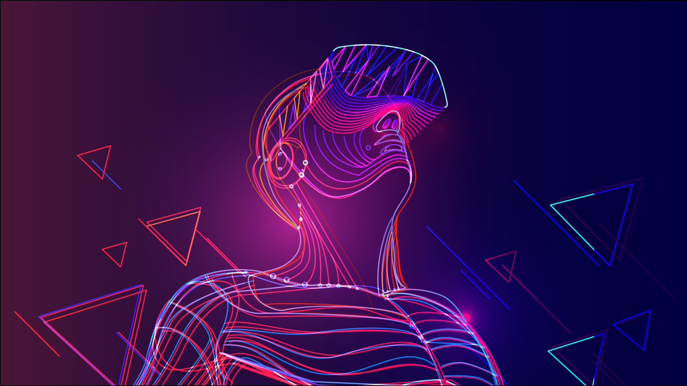
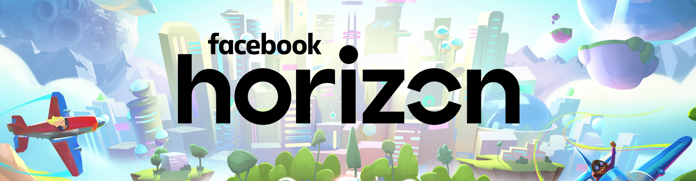

Bisa dibayangkan kita sedang berada di sebuah dunia digital bersama dengan teman kita di dalam satu ruang virtual, yang mana nyatanya ia tinggal jauh ribuan kilometer atau kita sedang bekerja didalam kantor virtual dengan rekan kerja kita diwaktu yang sama namun realitas fisik kita tidak ditempat yang sama.
Kedua teknologi ini sering kita dengar di berbagai platform media. Bahkan kalian pun sering bukan menggunakan teknologi VR/AR ini?
Ya,kita sering menggunakan sebagai filter kamera sebuah aplikasi entah itu Snapgram/Instagram dimana dapat menampilkan efek visual. Sebelum adanya teknologi METAVERSE, teknologi AR dan VR telah dikembangkan sebelumnya dan memperoleh progress yang sangat cepat hingga saat ini. Yap,keduanya sama-sama dapat menampilkan sebuah efek visualisasi namun, memiliki fungsi kegunaan yang berbeda.
Perkembangan VR dan AR yang telah banyak digunakan di berbagai macam bidang :
Metaverse merupakan hasil perkembangan dari VR dan AR. Istilah "metaverse" sudah ada sejak tahun 90an, diperkenalkan pada Novel Sci-fi berjudul Snow Crash yang digambarkan semacam sebuah dunia alternatif (dunia maya) yang menggunakan realitas fisik kita.

Metaverse adalah sebuah ruang virtual dimana lingkungan tertentu tercipta kembali dalam dunia digital dan orang-orang dapat melakukan interaksi satu sama lain, melakukan kegiatan itu tanpa adanya keterbatasan yang ada di dunia nyata seperti halnya Hukum Fisika. Kita bisa melakukan hal yang di luar nalar seperti berteleportasi , terbang dan sebagainya. Namun tetap saja Metaverse ini memiliki batasan-batasan tersendiri ialah kegunaan fungsi sensorik tubuh kita pada suatu hal objek dan keterbatasan yang telah ditetapkan oleh developer.

Salah satu raksasa teknologi dunia, Facebook, menginvestasikan USD$ 5 biliion per tahunnya untuk kemajuan dan perkembangan teknologi ini. Konsep yang akan dikembangkan Facebook diantaranya akan dibuat sebuah dunia virtual dimana semua hal aktivitas yang ada di dunia nyata akan ada pada dunia virtual tersebut. Mulai dari tempat tinggal, ragam aktivitas seperti berinteraksi dengan orang lain, bermain game dan bahkan pekerjaan seperti halnya di dunia nyata.
Kabarnya, tim Zuckerberg akan mengembangkan perangkat kerasnya yang akan digunakan sebagai akses masuk ke dalam dunia virtual tersebut dan menjualnya dengan harga terjangkau agar setiap penggunanya yang berasal dari beragam kalangan dapat merasakan teknologi Metaverse ini.
Gimana guys, tertarik untuk ikut terjun dalam dunia virtual dari facebook ?? Mari kita tunggu ya tanggal perilisannya.